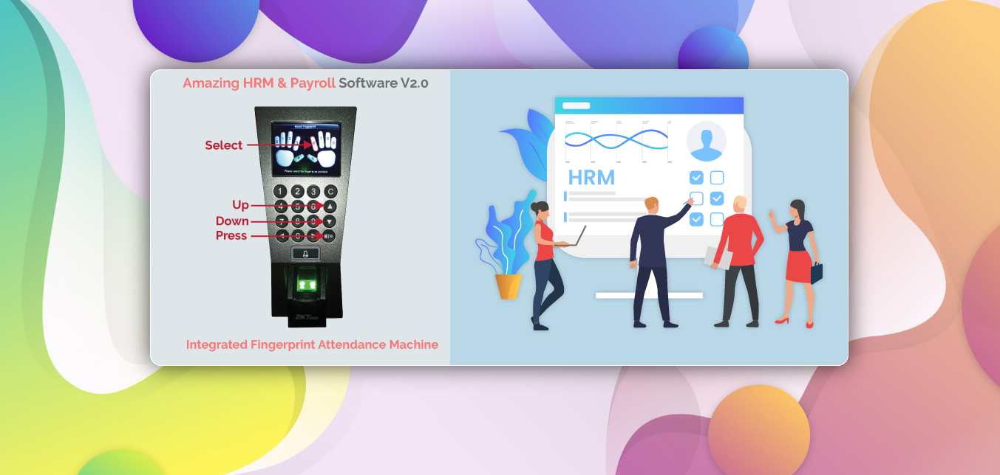
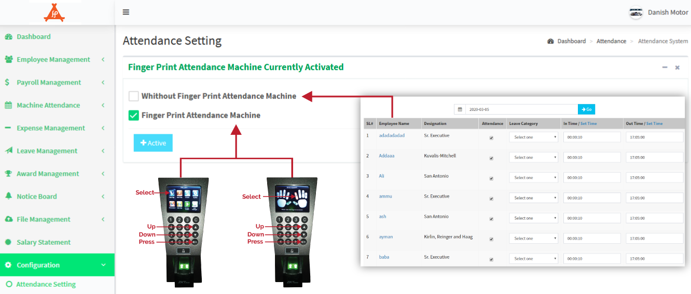
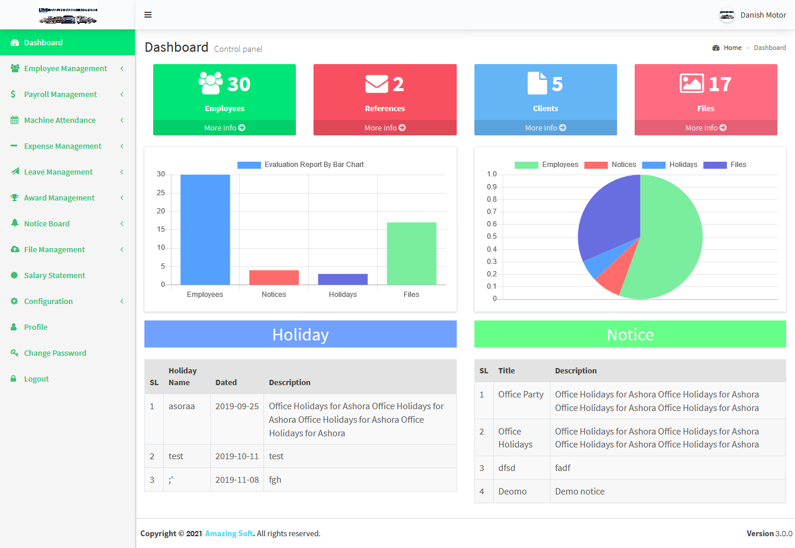

This application based on new Latest Laravel 5.8 Framework. Human Resource Management system(HRM) & Payroll has become one of the most important tools for any corporate environment. It’s very easy for any kind of businesses and helps to keep the HR & Payroll department clean and clear. Amazing HRM & Payroll software is not just a visualize it’s now become an essential software for maintaining every corporate office. Any company can use it for their regular tasks, employee workforce management and account management.
Amazing HRM & Payroll is designed latest security Technology and it is ready for high availability web application.
Documentation
For documentation Go here: Documentation



You can view a demo installation by following this link: Live Demo
Admin:
ID: admin@mail.com
Password: demo Admin Live Demo
Employee:
ID: employee@mail.com
Password: demo Employee Live Demo Features:
Integrated the Finger Print Attendance Machine
Import/Export the Finger Print Attendance File
Salary Sheet
Bonus, Credit Facility, Salary Deduction and provident fund management